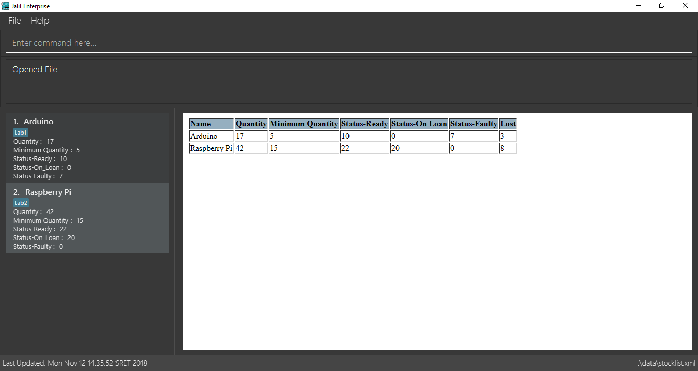

By: Team T12-3 Since: Sep 2018 Licence: MIT
- 1. Introduction
- 2. Quick Start
- 3. Features
- 3.1. Viewing help :
help - 3.2. List registered accounts:
listAccounts - 3.3. Find a registered account:
findAccount - 3.4. Logging in:
login - 3.5. Checking login status:
loginStatus - 3.6. Adding an item:
add - 3.7. Editing an item :
edit - 3.8. Deleting an item :
delete - 3.9. Listing all items :
list - 3.10. Selecting and highlighting an item :
select - 3.11. Clearing all items :
clear - 3.12. Locating items by name:
find - 3.13. Listing item according to status:
status - 3.14. Changing status of item:
changeStatus - 3.15. Creating a loan list:
loanList - 3.16. Viewing the loan list:
viewLoanList - 3.17. Deleting a loan list entry:
deleteLoanList - 3.18. Listing items under specific tags:
tag - 3.19. Add tags to one item:
addTag - 3.20. Delete tags from one item:
deleteTag - 3.21. Lost an item:
lost - 3.22. Found an item:
found - 3.23. Listing Lost&Found List:
lost&found - 3.24. Undoing previous command :
undo - 3.25. Redoing the previously undone command :
redo - 3.26. Listing entered commands :
history - 3.27. Save current version of stock list :
save - 3.28. Adding an account:
addAccount - 3.29. Deleting an account:
deleteAccount - 3.30. Editing an account currently in the database:
editAccount - 3.31. Resetting the account database:
resetAccounts - 3.32. Logging out:
logout - 3.33. Exiting the program :
exit - 3.34. Saving the data
- 3.35. Encrypting data files
[coming in v2.0]
- 3.1. Viewing help :
- 4. FAQ
- 5. Command Summary
1. Introduction
JalilEnterprises is for those who prefer to use a desktop app for stock taking. More importantly, JalilEnterprises is optimized for those who prefer to work with a Command Line Interface (CLI) while still having the benefits of a Graphical User Interface (GUI). If you can type fast, JalilEnterprises can get your stock management tasks done faster than traditional GUI apps. Interested? Jump to the Section 2, “Quick Start” to get started. Enjoy!
2. Quick Start
-
Ensure you have Java version
9or later installed in your Computer. -
Download the latest
JalilEnterprises.jarhere. -
Copy the file to the folder you want to use as the home folder for your Stock List.
-
Double-click the file to start the app. The GUI should appear in a few seconds.
 -
You should log into this app via the
logincommand before you start to use it.
Example of how to log in:-
loginu/admin p/admin
-
-
This app comes with a default admin account and it is strongly recommended to:
-
not delete this account,
-
note the changes made to this account to avoid the case of being locked out of StockList.
Credentials of the default account:
-
u/admin p/admin
-
-
When logged out, all commands are locked, except:
-
login -
listAccounts -
findAccount -
loginStatus -
history -
help -
exit
-
-
Type the command in the command box and press Enter to execute it.
e.g. typinghelpand pressing Enter will open the help window. -
Some example commands you can try:
-
list: lists all items -
addn/Arduino q/20 m/5 t/Lab1 t/Lab2: adds 20Arduinoitem to the StockList, with a minimum quantity of 5 and tagsLab1andLab2 -
delete1: deletes the item with index 1 -
status: Shows the number of every item in each status category (Ready, On_Loan, Faulty)
-
-
Refer to Section 3, “Features” for details of each command.
3. Features
Command Format
-
Words in
UPPER_CASEare the parameters to be supplied by the user e.g. inadd n/NAME,NAMEis a parameter which can be used asadd n/Arduino. -
Items in square brackets are optional e.g
n/NAME [t/TAG]`can be used asn/Arduino t/Lab1or asn/Arduino. -
Items with
…after them can be used multiple times including zero times e.g.[t/TAG]…can be used as ` ` (i.e. 0 times),t/Lab1,t/Lab2 t/Lab5etc. -
Parameters can be in any order e.g. if the command specifies
n/NAME q/QUANTITY,q/QUANTITY n/NAMEis also acceptable.
3.1. Viewing help : help
Format: help
3.2. List registered accounts: listAccounts
Lists all the accounts currently registered in StockList.
Format: listAccounts
3.3. Find a registered account: findAccount
Finds a registered account whose names contain any of the given keywords.
Format: findAccount KEYWORD [MORE_KEYWORDS]
Examples:
-
findAccount admin
ReturnsadminandAdmin Jalil -
findAccount admin tom
Returns any items having namesadminortom
3.4. Logging in: login
Logs into Stock List.
Format: login u/USERNAME p/PASSWORD
Examples:
-
login u/admin p/admin
3.5. Checking login status: loginStatus
Checks login status of Stock List.
Format: loginStatus
3.6. Adding an item: add
Adds an item to the stock list
Format: add n/NAME q/QUANTITY m/MINIMUM_QUANTITY [t/TAG]
Examples:
-
add n/Arduino q/20 m/5 t/Lab1 t/Lab2
3.7. Editing an item : edit
Edits an existing item in the stock list
Format: edit INDEX [n/NAME] [q/QUANTITY] [m/MINIMUM_QUANTITY] [t/TAG]
Examples:
-
edit 1 n/Arduino q/25 t/Lab7 t/Lab8
Edits the name, quantity and tags of the 1st item to beArduino,25andLab7,Lab8respectively.
3.8. Deleting an item : delete
Deletes an item from the stock list
Format: `delete INDEX
Examples:
-
delete 1
Deletes the item with index 1
3.9. Listing all items : list
Shows all items in the stock list
Format: list
3.10. Selecting and highlighting an item : select
Selects and highlights one item using its index number
Format: select INDEX
Examples:
-
select 1
Selects and highlights the item with the index number 1
3.11. Clearing all items : clear
Clears all items in the stock list
Format: clear
3.12. Locating items by name: find
Finds items whose names contain any of the given keywords.
Format: find KEYWORD [MORE_KEYWORDS]
Examples:
-
find Arduino
ReturnsArduinoandArduino Uno -
find Arduino Pi
Returns any items having namesArduinoorPi
3.13. Listing item according to status: status
Shows the quantity of every item in each status category (Ready, On_Loan, Faulty)
Format: status
3.14. Changing status of item: changeStatus
The status of the items can be changed from Ready to Faulty, and vice-versa
Format: changeStatus n/NAME q/QUANTITY os/ORIGINALSTATUS ns/NEWSTATUS
Examples:
-
changeStatus n/Arduino q/20 os/Ready ns/Faulty
The status of 20 Arduinos would be changed from Ready to Faulty
3.15. Creating a loan list: loanList
A loan list can be created whenever a list of items loaned out needs to be kept tracked on
Format: loanList n/NAME q/QUANTITY l/LOANER
Examples:
-
loanList n/Arduino q/20 l/KinWhye
This would update the status of the 20 arduinos to On_Loan, and add the entry into the loan list
3.16. Viewing the loan list: viewLoanList
Shows every loan list entry
Format: viewLoanList
3.17. Deleting a loan list entry: deleteLoanList
An entry in the loan list can be deleted when the loaner returns the items
Format: deleteLoanList INDEX
Examples:
-
deleteLoanList 1
The first entry as shown on the viewLoanList command will be deleted. The status of the item will be automatically changed back to ready
3.18. Listing items under specific tags: tag
Finds and lists items whose tags contain any of the given keywords.
Format: `tag KEYWORD [MORE_KEYWORDS]
Examples:
-
tag Lab1 Lab2
Returns the items whose tags includes "Lab1" or "Lab2"
3.19. Add tags to one item: addTag
Adds one or multiple tags to one item in the stock list by its index.
Format: addTag INDEX t/ TAG [MORE_TAGS]
Examples:
-
addTag 1 t/ Lab3 t/ Lab4
Add tags "Lab3" and "Lab4" to the item with index 1
3.20. Delete tags from one item: deleteTag
Deletes some tags and keeps the rest of one item in the stock list by its index.
Format: deleteTag INDEX t/ TAG [MORE_TAGS]
Examples:
-
deleteTag 1 t/ Lab1 t/ Lab2
Deletes tags "Lab1" and "Lab2" from the item with index 1
3.21. Lost an item: lost
Lost an item From the stock list
Format: lost INDEX q/QUANTITY
Examples:
-
lost 1 q/25
3.22. Found an item: found
Found an item From the Lost&Found List
Format: found INDEX q/QUANTITY
Examples:
-
found 1 q/25
3.23. Listing Lost&Found List: lost&found
Shows the number of every lost item that has been lost
Format: lost&found
3.24. Undoing previous command : undo
Restores the address book to the state before the previous undoable command was executed.
Format: undo
|
Undoable commands: those commands that modify the address book’s content ( |
Examples:
-
delete 1
list
undo(reverses thedelete 1command) -
select 1
list
undo
Theundocommand fails as there are no undoable commands executed previously. -
delete 1
clear
undo(reverses theclearcommand)
undo(reverses thedelete 1command)
3.25. Redoing the previously undone command : redo
Reverses the most recent undo command.
Format: redo
Examples:
-
delete 1
undo(reverses thedelete 1command)
redo(reapplies thedelete 1command) -
delete 1
redo
Theredocommand fails as there are noundocommands executed previously. -
delete 1
clear
undo(reverses theclearcommand)
undo(reverses thedelete 1command)
redo(reapplies thedelete 1command)
redo(reapplies theclearcommand)
3.26. Listing entered commands : history
Lists all the commands that you have entered in reverse chronological order.
Format: history
|
Pressing the ↑ and ↓ arrows will display the previous and next input respectively in the command box. |
3.27. Save current version of stock list : save
An xml file recording current stocks will be created and named.
Format: save NAME
Examples:
-
save ForAugust
This would save the stock list at the time when the command is inputted, and the name for this xml file isForAugust.xml, under a /versions/ folder in main. === Open a saved stock list :open
An xml file recording current stocks will be opened.
Format: open NAME
Examples:
-
open ForAugust
This would open the saved stock list under /versions/ folder in main at the time when the command is inputted
3.28. Adding an account: addAccount
Adds an account to the database.
Format: addAccount u/USERNAME p/PASSWORD
Examples:
-
addAccount u/john p/doe -
addAccount u/jalil p/boss123
3.29. Deleting an account: deleteAccount
Deletes an account from the database.
Format: delete INDEX
Index can be found using listAccounts
Examples:
-
deleteAccount 2
Deletes the second account in the database, according to the index vialistAccounts.
| It is strongly NOT recommended to delete the first account i.e. the admin account. |
3.30. Editing an account currently in the database: editAccount
Edits a registered account in the database.
Format: edit INDEX u/USERNAME [p/PASSWORD]
Examples:
-
editAccount 2 p/password123!
Changes the password of the second account topassword123!
| Exercise caution when editing the admin account. |
3.31. Resetting the account database: resetAccounts
Resets the account database.
All accounts will be deleted and a default admin account will be created.
Credentials of the default account: u/admin p/admin
Format: resetAccounts
3.32. Logging out: logout
Logs out of Stock List.
Format: logout
3.33. Exiting the program : exit
Exits the program.
This automatically logs out of StockList if the user is still logged in.
Format: exit
3.34. Saving the data
JalilEnterprises data are saved in the hard disk automatically after any command that changes the data.
There is no need to save manually.
3.35. Encrypting data files [coming in v2.0]
{explain how the user can enable/disable data encryption}
4. FAQ
Q: How do I transfer my data to another Computer?
A: Install the app in the other computer and overwrite the empty data file it creates with the file that contains the data of your previous Stock List folder.
5. Command Summary
-
Help
help -
List Accounts
listAccounts -
Find Account
findAccount
e.g.findAccount john doe -
Login
login u/USERNAME p/PASSWORD
e.g.login u/admin p/admin -
Check login status
loginStatus -
Add
add n/NAME q/QUANTITY m/MINIMUM_QUANTITY [t/TAG]…
e.g.add n/Arduino q/20 m/5 t/Lab1 t/Lab2 -
Edit
edit INDEX n/NAME [q/QUANTITY] [m/MINIMUM_QUANTITY] [t/TAG]
e.g.edit 1 n/Arduino q/25 t/Lab7 t/Lab8 -
Delete
delete INDEX q/QUANTITY
e.g.delete 1 q/20 -
List
list -
Select
select INDEX
e.g.select 1 -
Clear
clear -
Find
find KEYWORD [MORE_KEYWORDS]
e.g.find Arduino -
Status
status -
Change Status
changeStatus n/NAME q/QUANTITY os/ORIGINALSTATUS ns/NEWSTATUS
e.g.changeStatus n/Arduino q/20 os/Ready ns/Faulty -
Loan List
loanList n/NAME q/QUANTITY l/LOANER
e.g.loanList n/Arduino q/20 l/KinWhye -
View Loan List
viewLoanList -
Delete Loan List
deleteLoanList INDEX
e.g.deleteLoanList 1 -
Tag
tag KEYWORD [MORE_KEYWORDS]
e.g.tag Lab1 -
Add Tag
addTag INDEX t/TAG [MORE_TAGS]
e.g.addTag 1 t/Lab2 -
Delete Tag
deleteTag INDEX t/TAG [MORE_TAGS]
e.g.deleteTag 1 t/Lab2 -
Lost :
lost INDEX q/QUANTITY
e.g.lost 1 q/25 -
Found :
found INDEX q/QUANTITY
e.g.found 1 q/25 -
Lost&Found List :
lost&found -
Undo :
undo -
Redo :
redo -
History :
history -
Save
save NAME
e.g.save ForAugust -
Open
open NAME
e.g.open forAugust -
Add Account
addAccount u/USERNAME p/PASSWORD
e.g.add u/jalil p/boss -
Delete Account
deleteAccount INDEX
e.g.deleteAccount 2 -
Edit Account
editAccount INDEX u/USERNAME [p/PASSWORD]
e.g.edit 2 p/password123! -
Reset Accounts
resetAccounts -
Logout
logout -
Exit
exit